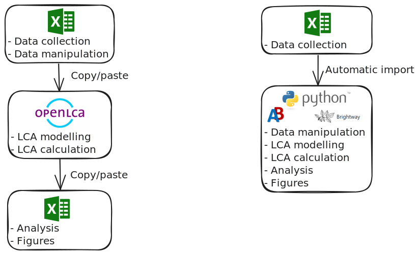
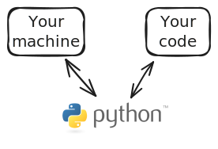
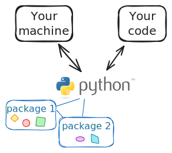
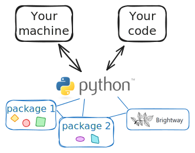
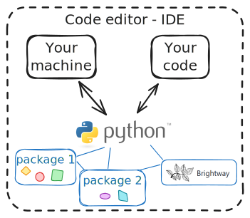
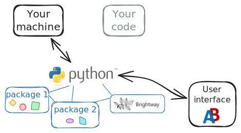
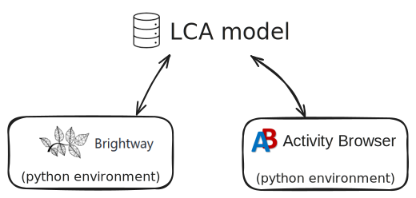
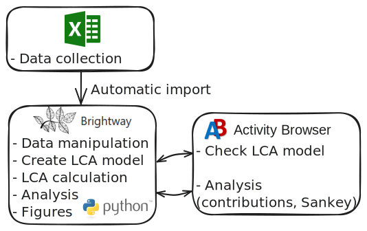

Introduction to LCA with the AB and Brightway
Link to the slides
Find the slides at adelinejerome.github.io/seminars-for-esa/seminar_intro.html
Why

Greater flexibility
- Non-standard LCA methodological choices
- Connection to other tools (e.g., IAM, statistics, ML)
Reproducibility and transparency
- For understanding what you did
- For the others to understand what you did
- For you/others to use the same methodology
Easier to update
- Less room for error when updating data inputs
- Automatic update of the whole work
- Update/change ecoinvent (the background database)
Easier version control with Git
- Change-tracking
- Backup
- Collaboration
What
Python

Python packages

Examples:
- pandas for data tables manipulation,
- matplotlib for figures,
- …
Brightway

Code editor

Examples:
- Jupyter
- Spider
- PyCharm
- Visual Studio Code
- …
The Activity Browser

Features with the tools
Brightway
- Fast calculations
- Parameters in the inventory
- Uncertainty analysis (Monte-Carlo simulation)
Brightway
And extensions for:
Regionalization with bw2regional
Temporal distributions in the inventory and for characterization factors with temporalis
Prospective foreground databases based on IAM with premise
Global sensitivity analysis with lca_algebraic
Still in development: collaborative work on the same LCA model on a server
The Activity Browser
Similar to brightway but more user friendly. Advanced tasks:
- Use of scenarios
- Visualization tools (Sankey diagram)
- Plugin for prospective background databases with premise
Combine brightway and the Activity Browser?
Yes you can!

My initial workflow

My ideal workflow

Tips for easier work
Especially when working with brightway:
- Document what you do with comments and text (markdown cells)
- Use descriptive names for your variables (e.g., not
nbuttransportation_to_factory_distance_km) - Use Google and ChatGPT as somebody probably thought of this calculation step, copy/paste chunks of code!
- NEVER update brightway/the AB on your working environment, create a new environment!
Tips to get started
Get help
- From your colleagues 👋
- From ChatGPT
- From the documentation or user manual
- From the community:
- On mail distribution lists on groups.io
- On Stackoverflow
- On GitHub (for bugs)
Main source of information
Go to the GiHub pages (the AB, brightway) to find updated information or links to:
- Install the tools,
- Learn how to use it,
- Find examples.
Website to gather tips and resources
Seminars for ESA as an initial resource.
You are welcome to contribute!
Thank you!
Feedback